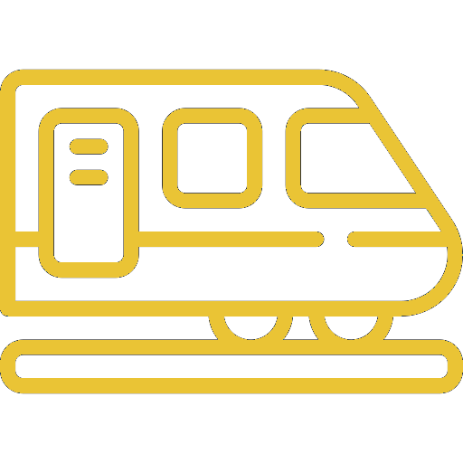
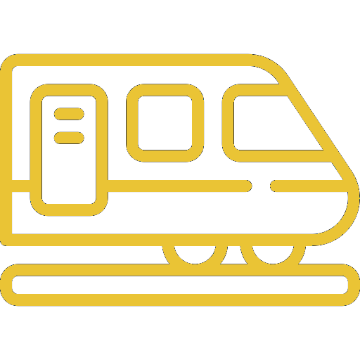

BUDAPEST
Capitale de la Hongrie, Budapest est traversée par le Danube qui sépare la ville en Buda (rive droite) et Pest (rive gauche). Elle offre une combinaison unique de cultures diverses, une cuisine raffinée et un large éventail d’activités de loisirs.


 



Top 3 des activités


Où sortir ?


Où manger ?